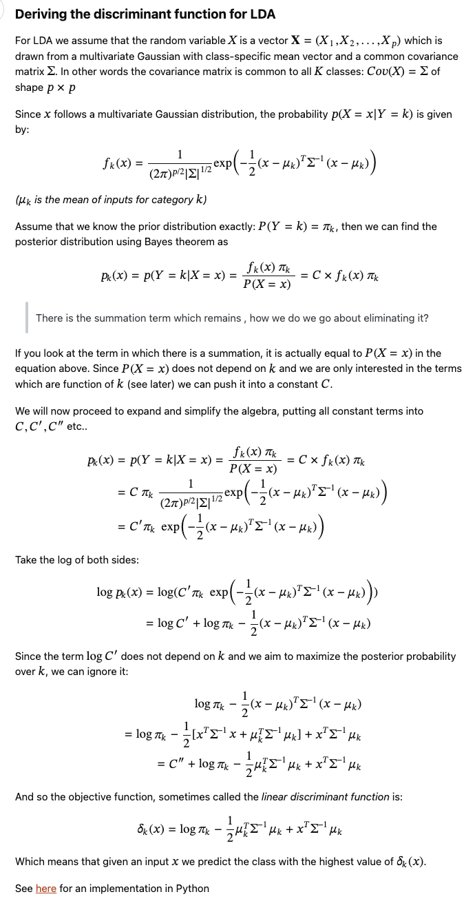

week9 lec 1#
p.244 - p.265
This note is completed with the assistance of ChatGPT and ChatGPT
Week 9, Lecture 1: Advanced Classification Techniques#
QD vs. LD:
QD often outperforms LD, but it requires estimation of \(K\) covariance matrices, which can be challenging especially when dimensionality, \(p\), is high.
LD assumes the same covariance for all groups, whereas QD allows different covariances for each group.
Math:
LD Decision Rule:
\[ \delta_k(x) = x^T \Sigma^{-1} \mu_k - \frac{1}{2} \mu_k^T \Sigma^{-1} \mu_k \]QD Decision Rule:
\[ \delta_k(x) = -\frac{1}{2} \log|\Sigma_k| - \frac{1}{2}(x-\mu_k)^T \Sigma_k^{-1} (x-\mu_k) \]Regularized Discriminants:
For high-dimensional data, standard QD and LD may be too noisy. Regularized versions can strike a balance.
Regularized QD uses a combination of individual and pooled covariances.
Math:
\[ \tilde{\Sigma}_k = \alpha \hat{\Sigma}_k + (1 - \alpha) \hat{\Sigma} \]Where \( \alpha \) is a tuning parameter in the range [0,1].
Cross-Validation (CV) for Classification:
CV evaluates the classification error rate.
Leave-One-Out CV offers a refined approach by removing one observation at a time.
B-fold CV partitions data into \(B\) blocks and then evaluates each block.
Math:
Leave-One-Out CV Error Rate:
\[ CV = \frac{1}{n} \sum_{i=1}^n I(G^{\hat{}}(-i) \neq G_i) \]B-fold CV:
\[ CV = \frac{1}{B} \sum_{b=1}^B \sum_{i=1}^n I(G^{\hat{}}(-b) \neq G_i) \cdot I(\text{ith indiv is in block } b) \]Regression for Multiple Classes \(K > 2\):
For multiple classes, we can recode the response into multiple binary outcomes.
The probability curves or regression curves are used to estimate the probability of each class.
Math:
\[ m_k(x) = E[Y_k|X=x] = P(G=k|X=x) \]Given the constraint:
\[ \sum_{k=1}^K m_k(x) = 1 \]We can deduce:
\[ m_K(x) = 1 - \sum_{j=1}^{K-1} m_j(x) \]
Linear Discriminant Analysis (LDA):#
Bayes in LDA#
To derive the formula for the linear discriminant function, we can start by considering Bayes’ theorem and our assumptions about the data distribution in the context of LDA.
Tip
We want to maximise \( P(G = k|X = x) \), however, this term is hard to maximise directly.
Therefore, we will use Baye’s theorem to maximise the equivalent term \(\frac{P(X = x|G = k)P(G = k)}{P(X = x)} \). Since the denominator \(P(X = x)\) does not depend on k and we are only interested in the terms which are function of k, this term can be seen as a constant and will be eliminated through derivations.
Hence we only need to focus on the log transformation on the numerator where the \(P(X = x|G = k)\) can be expressed with known pdf distribution and \(P(G = k)\) can be expressed by \(\pi\).
Similar approach for QA.
Given:
Where:
\( P(G = k|X = x) \) is the posterior probability that a given observation \( x \) belongs to class \( k \).
\( P(X = x|G = k) \) is the likelihood of observing \( x \) given that it belongs to class \( k \).
\( P(G = k) \) is the prior probability of class \( k \) (denoted as \( \pi_k \)).
\( P(X = x) \) is the overall probability of observing \( x \).
Our goal is to decide for which \( k \) the posterior probability \( P(G = k|X = x) \) is the largest. We can ignore the denominator \( P(X = x) \) since it’s the same for all \( k \).
For LDA, we assume that \( X \) given \( G = k \) follows a multivariate normal distribution with mean \( \mu_k \) and common covariance matrix \( \Sigma \). This gives:
Taking the logarithm to simplify calculations:
Combine this with the logarithm of the prior, \( \log(\pi_k) \), to form the linear discriminant function:
This discriminant function is linear in \( x \), hence the name Linear Discriminant Analysis (LDA). Given a new observation \( x \), we classify it into the class \( k \) that maximizes \( \delta_k(x) \).
The decision rules for LDA and QDA, denoted \( \delta(x) \) for LDA and \( \delta_{QD}(x) \) for QDA, stem from the discriminant functions for each class. These functions are based on the log probabilities of the data given the parameters of each class.
If the above is still not clear:
{kind=link}
Decision Boundary#
LDA#
For a two-class problem, the linear discriminant function for a class \( k \) can be derived from the log probabilities and is given by:
Where:
\( x \) is the data point we want to classify.
\( \Sigma \) is the shared covariance matrix.
\( \mu_k \) is the mean vector for class \( k \).
\( \pi_k \) is the prior probability for class \( k \).
For a new observation \( x \), if \( \delta_1(x) > \delta_2(x) \), then \( x \) is classified into class 1; otherwise, it’s classified into class 2. The decision boundary is given by \( \delta_1(x) = \delta_2(x) \).
In practice, we are interested in the difference \( \delta(x) = \delta_1(x) - \delta_2(x) \). The observation \( x \) is classified to class 1 if \( \delta(x) > 0 \) and to class 2 if \( \delta(x) < 0 \).
Quadratic Discriminant Analysis (QDA):#
The quadratic discriminant function for a class \( k \) is:
Where:
\( \Sigma_k \) is the covariance matrix specific to class \( k \).
Again, for a new observation \( x \), if \( \delta_{QD,1}(x) > \delta_{QD,2}(x) \), then \( x \) is classified into class 1; otherwise, it’s classified into class 2. The decision boundary in this case is given by \( \delta_{QD,1}(x) = \delta_{QD,2}(x) \).
The difference is \( \delta_{QD}(x) = \delta_{QD,1}(x) - \delta_{QD,2}(x) \), and the observation \( x \) is classified to class 1 if \( \delta_{QD}(x) > 0 \) and to class 2 if \( \delta_{QD}(x) < 0 \).
In summary, these discriminant functions provide a way to assign a new observation to a class based on maximizing the posterior class probability, considering the likelihoods under the multivariate normal assumption and the prior probabilities.
Comparison between LD & QD#
Assumed Distributions
LD: \(X|G=k \sim N(\mu_k, \Sigma)\) (same covariance for all groups)
QD: \(X|G=k \sim N(\mu_k, \Sigma_k)\) (different covariances for each group)
Density Function
LD: \(P(X = x|G = k) \propto \exp(-0.5(x-\mu_k)^T \Sigma^{-1} (x-\mu_k))\)
QD: \(P(X = x|G = k) \propto \frac{\exp(-0.5(x-\mu_k)^T \Sigma_k^{-1} (x-\mu_k))}{|\Sigma_k|^{0.5}}\)
Log Likelihood Ratio
LD: \(\delta_k(x) = x^T \Sigma^{-1} \mu_k - \frac{1}{2} \mu_k^T \Sigma^{-1} \mu_k + \log(\pi_k)\)
QD: \(\delta_k(x) = -\frac{1}{2} \log|\Sigma_k| - \frac{1}{2}(x-\mu_k)^T \Sigma_k^{-1} (x-\mu_k) + \log(\pi_k)\)
Decision Rule
LD: Classify \(x\) to the class \(k\) for which \(\delta_k(x)\) is the largest.
QD: Classify \(x\) to the class \(k\) for which \(\delta_k(x)\) is the largest.
Nature of Decision Boundary
LD: Linear (since terms quadratic in \(x\) will cancel out)
QD: Quadratic (due to the term involving \(\Sigma_k^{-1}\) which doesn’t cancel out as in LDA)
Estimation of Parameters
LD: Estimate \(\mu_k\) using sample mean of class \(k\). \(\Sigma\) is estimated as the pooled sample covariance matrix. \(\pi_k\) can be the proportion of class \(k\) in the sample.
QD: Estimate \(\mu_k\) using sample mean of class \(k\). \(\Sigma_k\) is estimated separately for each group. \(\pi_k\) can be the proportion of class \(k\) in the sample.